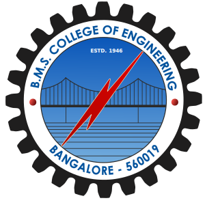
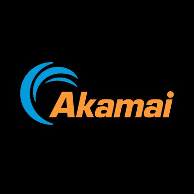

Hey there 👋
I'm currently a graduate student at Carnegie Mellon University, School of Computer Science. Before this, I worked as a software engineer at Quicken, where I honed my skills in software development and problem-solving. My undergraduate research focused on applying machine learning to edge computing systems, which deepened my interest in the intersection of machine learning and systems. I'm fascinated by this intersection, and look forward to learning more and making contributions in this area!Education
 Carnegie Mellon University, School of Computer Science
Carnegie Mellon University, School of Computer Science
- Master of Computational Data Science | August 2025 - May 2027
 B.M.S. College of Engineering
- Bachelor of Engineering, Computer Science | August 2019 - June 2023
Work Experience
- Software Engineer 2 | July 2023 - Present
I was a part of the product development team of Intuit's first product, Quicken. I've worked on developing several significant features such account subtotals, modernized preferences and quickfill. I also contributed to the development of the online backup functionality for Quicken Windows. I played a key role in delivering the rebranding release as part of a company-wide rebranding initiative and was actively involved in enhancing the application's cloud sync reliability. - Software Engineer Intern | January 2023 - June 2023
I migrated all in-product browser components from EO Browser to Microsoft WebView2 to address security issues in the application. Additionally, I resolved several bugs related to cloud sync, improving the sync reliability between the native application and its web companion.

Akamai Technologies, Bangalore
- Software Engineer Intern | September 2022 - November 2022
As part of the developer productivity team, I assessed and improved a tool designed for the complete migration of source code from Perforce to Git. I addressed issues related to branch mapping and connection timeouts, and conducted a performance evaluation of the tool.
Publications
-
Pneumonia Detection Using Anterior Chest X-Ray Images
Vallisha M, Vishal Khot, Nagarathna N
International Conference on Emerging Technologies in Computer Science for Interdisciplinary Applications (ICETCS), April 2024 -
Actor Critic based Multi Objective Reinforcement Learning for Multi Access Edge Computing
Vishal Khot, Vallisha M, Sharan S Pai, Chandra Shekar R K, Kayarvizhy N
International Journal of Advanced Computer Science and Applications, February 2024 -
Deep Reinforcement Learning for Task Offloading in a Multi-Access Edge Computing Environment
Vallisha M, Vishal Khot, Sharan S Pai, Vineeth R Rao, Kayarvizhy N
International Conference on Network, Multimedia and Information Technology (NMITCON), September 2023
Projects
-
Reinforcement Learning for Task Offloading in Edge Computing Environments
[GitHub]
Implemented a Reinforcement Learning agent to make the task offloading decision while optimizing multiple objectives like energy, latency and task drop rate. Developed an edge computing simulation environment using Python and compared 6 different reinforcement learning algorithms. Won the best project award and published two papers based on our findings. -
Pneumonia Detection using Frontal Chest X-Ray
[GitHub]
Built a Convolutional Neural Network (CNN) to classify chest x-ray images into two categories, Normal and Pneumonia. Trained the model using 5232 images and achieved an accuracy of 95.66% on the test set. Designed a containerized web application using Django to upload images and view results easily. -
URL Shortener
[GitHub]
Developed a URL shortening service using Go and Redis. Containerized it and leveraged docker compose to spin up the service and the Redis instance.
Hobbies
I'm always up for a game of badminton or table tennis! I also follow cricket and football (a long-time Chelsea fan). I enjoy going on bike rides and travelling in general.